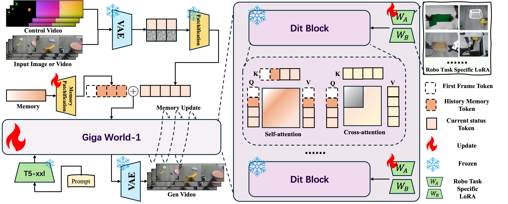
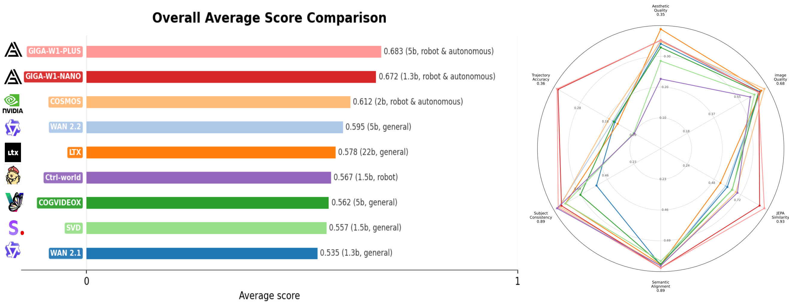
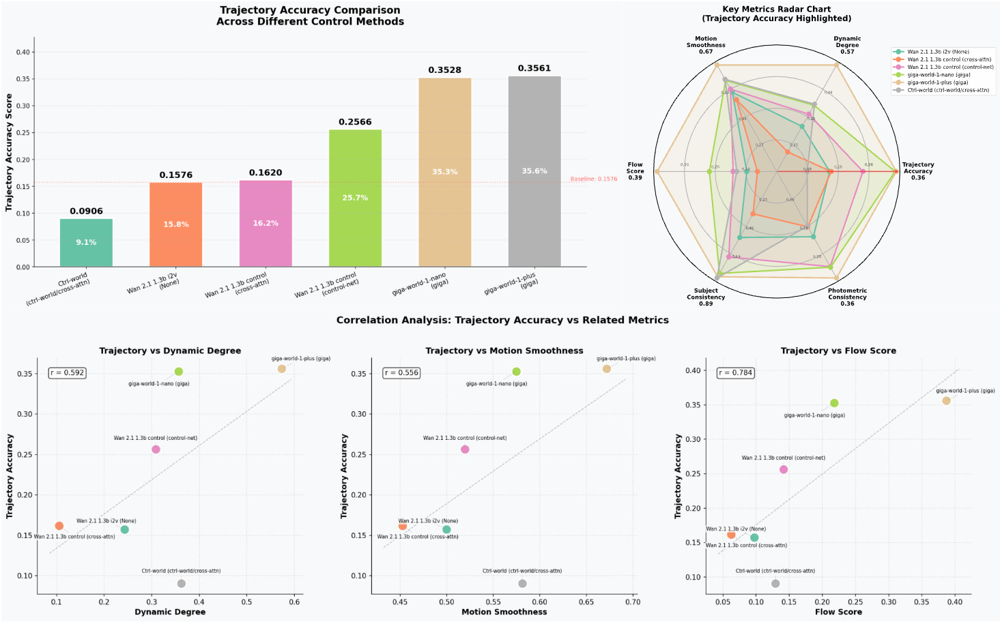
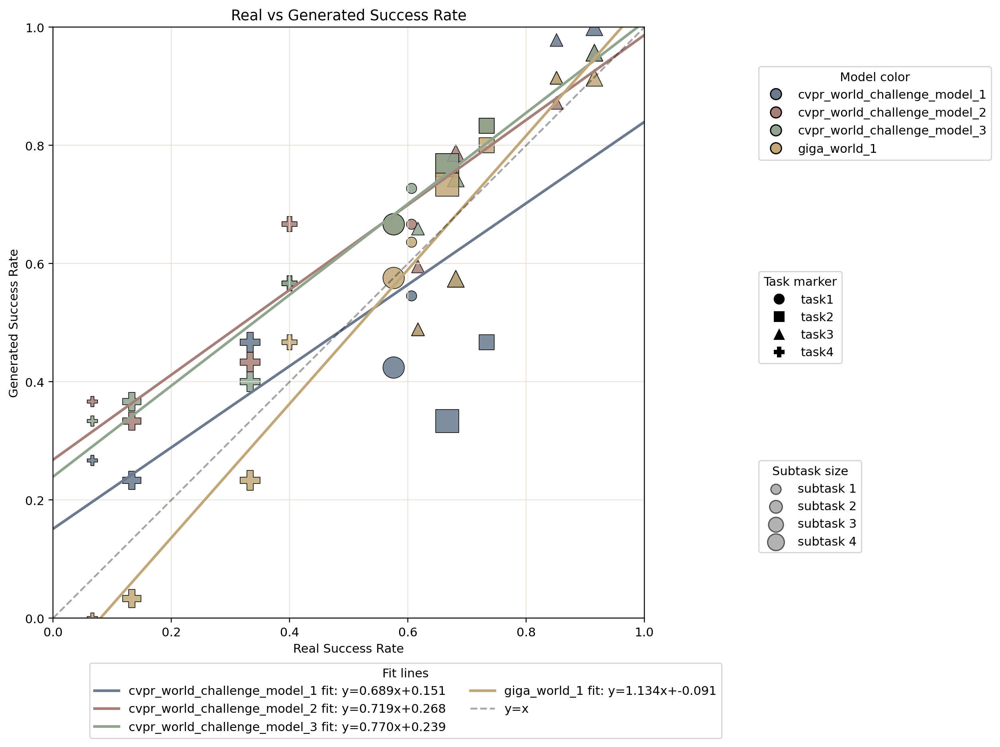
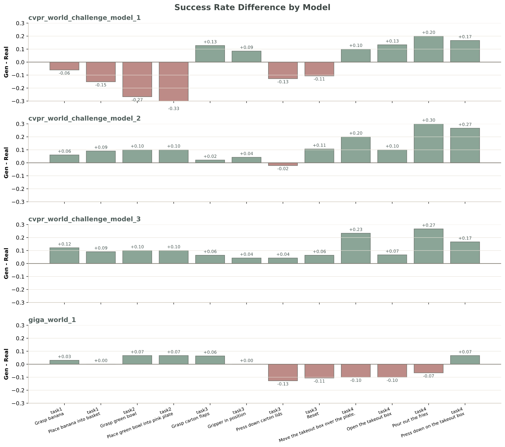
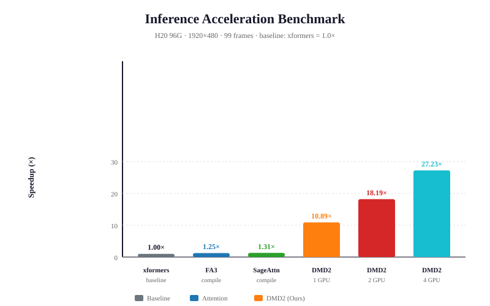
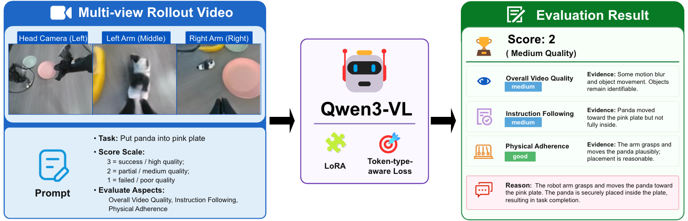

GigaWorld-1: A
Roadmap to
World Models for Robot Policy Evaluation
A systematic study of world models as policy evaluators, introducing WMBench and a practical design roadmap for building evaluator-oriented world models.
GigaAI
Abstract
Evaluating embodied robot foundation models remains a critical bottleneck: unlike digital AI systems, robot policies must be tested through slow, costly, and hardware-limited real-world rollouts. This motivates the use of world models as scalable surrogate evaluators, but what makes a world model reliable for policy assessment is still not well understood.
We introduce WMBench, a real-robot benchmark built from teleoperation data and matched policy rollouts, enabling controlled comparisons across model families, action encodings, rollout horizons, and evaluation metrics. Using WMBench, we analyze 7 video world models, 4 action representations, and 324,000+ simulated rollouts paired with real robot executions, further supported by 12,000+ hours of training videos and CVPR 2026 GigaBrain Challenge submissions.
Our study shows that evaluator quality is driven less by short-term visual realism and more by long-horizon, action-faithful rollout consistency. It also highlights the importance of balancing general world knowledge and robot controllability, as well as architecture choices such as action encoding, memory, and evaluator-focused post-training. These insights lead to GigaWorld-1, a world model optimized for scalable robot policy evaluation.
Key Features
Data Sources & Curation
We build a 12,980-hour heterogeneous training corpus from internet and physics videos, open-source robot datasets, egocentric human-hand data, and Giga-collected demonstrations, combining broad visual-physical priors with embodiment-specific manipulation behaviors.
| Category | Representative Sources | Robot Type | Hours | Modality |
|---|---|---|---|---|
| Physical | Internet Videos, Physics Videos | ⚙️ N/A | ~1,298 | 🎥 RGB Video |
| Robot | Open X, AgiBot | 🦿 Single-arm 🤖 Dual-arm 🧍 Humanoid | ~5,377 | 🦾 Robot Demonstration |
| Human | EgoDex, SynData | ✋ Human Hands | ~2,411 | 🎥 RGB Video 🖐️ Hand Pose |
| Giga | Giga Humanoid, Giga Dual-arm | 🧍 Humanoid 🤖 Dual-arm | ~3,894 | 🦾 Robot Demonstration |
GigaWorld-1: Model and Experiments

Figure: Overall architecture of GigaWorld-1, an autoregressive diffusion-transformer world generator adapted with LoRA. Historical frames, future noisy latents, and temporally aligned controls such as actions, depth, semantic maps, and captions are fused for embodied rollout generation; each generated window is decoded and appended back into the rollout history.
Evaluator Benchmark — WMBench Leaderboard

Figure: Left: average score across seven evaluation metrics. Right: per-metric radar comparison. GigaWorld-1-Nano achieves the best overall score and is especially strong in JEPA Similarity, Semantic Alignment, Subject Consistency, and Trajectory Accuracy.
| Rank | Model | Size | Type | Aesthetic↑ | Image↑ | JEPA↑ | Semantic↑ | Subject↑ | Trajectory↑ | AVG↑ |
|---|---|---|---|---|---|---|---|---|---|---|
| 1 | GigaWorld-1-Plus | 5B | Robot/Auto | 0.3534 | 0.6765 | 0.9337 | 0.8926 | 0.8883 | 0.3561 | 0.6834 |
| 2 | GigaWorld-1-Nano | 1.3B | Robot/Auto | 0.3538 | 0.6802 | 0.8911 | 0.8920 | 0.8600 | 0.3528 | 0.6716 |
| 3 | Cosmos-Predict2.5 | 2B | Robot/Auto | 0.3491 | 0.7184 | 0.6781 | 0.8764 | 0.8747 | 0.1770 | 0.6123 |
| 4 | Wan 2.2 | 5B | TI2V 5B General | 0.3538 | 0.6980 | 0.5853 | 0.8789 | 0.8883 | 0.1643 | 0.5948 |
| 5 | LTX 2.3 | 22B | General | 0.3900 | 0.6967 | 0.5380 | 0.8678 | 0.8248 | 0.1479 | 0.5775 |
| 6 | CogVideoX | 5B | General | 0.3303 | 0.6775 | 0.6437 | 0.8633 | 0.6963 | 0.1609 | 0.5620 |
| 7 | SVD | 1.5B | General | 0.2861 | 0.6497 | 0.6454 | 0.8411 | 0.8267 | 0.0926 | 0.5569 |
| 8 | Wan 2.1 | 1.3B | I2V 1.3B General | 0.3422 | 0.6856 | 0.6002 | 0.8705 | 0.5568 | 0.1576 | 0.5355 |
Table: Robot-oriented models generally outperform generic video backbones on embodied rollout evaluation. Cell background colors indicate ranking: green = 1st, yellow = 2nd, red = last. All metrics are higher-is-better (↑).
Multi-View Trajectory Accuracy

Trajectory Accuracy. Trajectory accuracy under multi-view control. The same control signal is faithfully reflected in both head and wrist views, with sub-pixel alignment between predicted and ground-truth keypoints.

Precise Multi-View Control. Pixel-aligned, view-specific control signals keep every camera anchored to the same underlying action.
Closed-Loop Policy Consistency

Closed-loop Success Correlation

Closed-loop Success Rate
Physically Consistent World Model
OOD Generalization
Beyond in-distribution WMBench, we test OOD rollout consistency across novel actions, unseen backgrounds, new containers, and unseen food categories.
⚡ Flash & Ultra-Long-Horizon Generation

DMD2 step-distillation + tensor-parallel scaling pushes the world model to 27.23× on 4 GPUs, unlocking real-time interactive use.
⚡ Flash & Ultra-Long-Horizon Generation. Real-time uninterrupted generation demo: over 10 minutes and 11K frames.
Transfer & Generalization
Beyond standard OOD evaluation, GigaWorld-1 demonstrates rapid transfer capabilities across new domains and conditioning modalities. The same world-model design can be effortlessly adapted to autonomous driving, supports edge / depth map conditioning, and generalizes across different robot embodiments. Fine-tuning on new datasets or conditioning modalities typically requires only 8 GPUs and a few thousand training steps, making domain adaptation and modality extension highly efficient.

VLM-assisted Rollout Evaluator

The VLM-assisted rollout evaluator scores generated videos on the same 1–3 ordinal scale as human annotators. Across 5,000+ videos, it reaches 87.80% exact agreement and 99.16% adjacent agreement with human ratings, with only 0.84% off by two score levels. Strong correlations (Spearman 0.7574, Kendall τb 0.7507) show that it is a reliable proxy for method-level WMES comparison.
| Overall Video Quality | Medium Video is split into three views, but all are shaky and blurry with frequent motion blur and fast panning. | Medium Video is blurry and shaky, but objects (panda, plates, banana) are identifiable across all three views. | 0.355 |
|---|---|---|---|
| Instruction Following | Poor The robot arm attempts to pick up a panda but fails to place it into the pink plate; the panda remains on the table. | Poor The robot arm attempts to grasp the panda but fails to place it into the pink plate; the panda remains on the table. | 0.863 |
| Physical Adherence | Medium Contact is attempted but unstable; the panda is not securely grasped or placed, and final state shows panda outside the plate. | Medium The robot arm makes contact with the panda, but the grasp is unstable and the panda is not lifted or moved toward the plate. | 0.467 |
The robot fails to place the panda into the pink plate; the panda is not inside the plate in the final state. Video quality is shaky and blurry, but the failed task is clear.
The robot arm attempts to grasp the panda but fails to lift or move it into the pink plate. The panda remains on the table, and the final state does not show the task completed.
| Overall Video Quality | Poor Video is extremely blurry, shaky, and lacks clear object details, making it difficult to identify objects or actions. | Poor Video is extremely blurry, shaky, and lacks clear object visibility, making it difficult to discern actions or final states. | 0.737 |
|---|---|---|---|
| Instruction Following | Poor The task 'put green bowl into pink plate' is not completed; the final state does not show a green bowl inside a pink plate. | Poor The video does not clearly show the green bowl being placed into the pink plate; the final state is ambiguous and not visible. | 0.503 |
| Physical Adherence | Unclear Due to severe visual corruption, it's impossible to assess physical interactions, contact, or stability. | Unclear Due to severe visual corruption and lack of clear contact or placement, physical interactions cannot be reliably assessed. | 0.478 |
The video is too corrupted to clearly identify objects or actions. The task is not completed, and the final state is ambiguous due to poor video quality.
The video is severely corrupted with extreme blur and motion, preventing clear identification of objects or actions. The task of putting the green bowl into the pink plate is not visibly completed, and the final state is ambiguous. Therefore, the task is failed.
| Overall Video Quality | Medium The video is clear with consistent views from three cameras, but the action is partially obscured by robotic arms and objects. | Medium Video is clear but shows a split view; the right panel is often blurry or shows only a partial object. | 0.290 |
|---|---|---|---|
| Instruction Following | Medium The robot arm picks up the banana and moves it toward the basket, but the final placement is not clearly visible. | Medium The robot arm picks up the banana and moves it toward the basket, but the final placement is not clearly shown. | 0.922 |
| Physical Adherence | Medium The banana is grasped and moved plausibly, but the interaction with the basket is not fully shown, leaving stability and containment ambiguous. | Medium The banana is grasped and moved, but the video ends before confirming stable containment in the basket. | 0.477 |
The robot arm attempts to place the banana into the basket, showing meaningful progress. However, the final state is not clearly visible, making completion ambiguous and supporting a partial score.
The robot successfully grasps the banana and moves it toward the basket, showing meaningful progress. However, the final state is not clearly visible, making completion ambiguous.
| Overall Video Quality | Medium Three camera views are provided, but motion blur and varying camera angles reduce clarity in some frames. | Medium Video is split into three views; middle and right panels are often blurry or obstructed, making detailed observation difficult. | 0.238 |
|---|---|---|---|
| Instruction Following | Medium The robot picks up the panda toy and moves it toward the pink plate, but the final placement is not clearly completed. | Medium Robot arm picks up the panda toy and moves it toward the pink plate, but the final placement is not clearly shown. | 0.883 |
| Physical Adherence | Medium The robot arm makes plausible contact with the panda toy and moves it, but the final state in the pink plate is ambiguous. | Medium The robot arm grasps the panda and moves it, but the final state of the panda on the plate is ambiguous due to camera angles. | 0.593 |
The robot successfully picks up the panda toy and initiates movement toward the pink plate, showing meaningful progress. However, the final placement into the plate is not clearly visible or completed in the provided frames.
The robot arm successfully picks up the panda and moves it toward the pink plate, showing progress. However, the final placement is not clearly visible, making the task completion ambiguous.
| Overall Video Quality | Good All three camera views are clear, showing consistent object positions and robot movements without major artifacts. | Good The video is clear, with consistent object identities and smooth camera movements across all three views. | 0.482 |
|---|---|---|---|
| Instruction Following | Good The robot picks up the panda toy and places it directly onto the pink plate, achieving the requested action. | Good The robot successfully picks up the panda toy and places it into the pink plate, as instructed. | 0.639 |
| Physical Adherence | Good The robot arm makes plausible contact with the panda, lifts it, moves it, and releases it stably onto the plate. | Good The robot's gripper makes plausible contact with the panda, lifts it, and releases it into the plate without physical impossibilities. | 0.637 |
The video clearly shows the robot arm successfully grasping the panda toy, transporting it, and placing it into the pink plate. All three views confirm the action and stable final state.
The video shows the robot arm picking up the panda toy and placing it into the pink plate, which is the correct final state. The action is completed, and the final state is stable and correct.
| Overall Video Quality | Good Three synchronized camera views are clear, with consistent object identity and no major visual artifacts. | Good The video is clear, with consistent object identities and smooth camera movements across all three views. | 0.453 |
|---|---|---|---|
| Instruction Following | Good The robot arm picks up the panda toy and places it directly into the pink plate, fulfilling the instruction. | Good The robot correctly identifies the panda and moves it into the pink plate, completing the task as instructed. | 0.490 |
| Physical Adherence | Good The robot's grasp is stable, the panda is lifted and moved plausibly, and it lands securely inside the plate. | Good The robot's gripper makes plausible contact with the panda, lifts it, and places it stably onto the plate. | 0.418 |
The video clearly shows the robot successfully picking up the panda and placing it into the pink plate, with stable motion and a correct final state across all three views.
The video shows the robot successfully picking up the panda and placing it into the pink plate, with clear visual evidence of the final state. All aspects of the task are completed correctly and plausibly.
WMBench at a Glance
WMBench separates good generation from good evaluation. Beyond outcome-level WMES, it uses automated diagnostics to analyze rollout quality, geometry, semantics, dynamics, interaction, and evaluator reliability.
WMES for Policy Evaluation
Measures whether a world model can replace real robot rollouts for method-level policy comparison.
Generation Process Metrics
Diagnoses visual realism, temporal stability, geometry, semantics, motion, and interaction quality.
Evaluator Agreement
Uses correlation and rank-stability metrics to test whether simulated evaluation matches real outcomes.
Generation Quality & Appearance Stability
Low-level realism and pixel-level consistency, including reconstruction quality, distribution distance, visual preference, background stability, and photometric consistency.
- PSNR
- FID / FVD
- Image Quality
- Aesthetic Quality
- Background Consistency
- Photometric Consistency
Visual & Geometric Fidelity
Structural integrity of the robot scene, object identity, embodiment consistency, and stable 3D geometry across viewpoints.
- Subject Consistency
- Perspectivity
- Depth Accuracy
- JEPA Similarity
Semantics, Dynamics & Interaction
Task intent, physical plausibility, action following, contact correctness, motion continuity, and trajectory agreement.
- Semantic Alignment
- Instruction Following
- Interaction Quality
- Trajectory Accuracy
- Motion Smoothness
- Dynamic Degree
- Flow Score
Evaluator Reliability
Meta-evaluation metrics quantify whether world-model scores preserve real-world policy rankings and outcome trends.
- PCC
- MMRV
- VLM-assisted WMES
Citation
@article{gigaworld2025,
title = {GigaWorld-1: A Roadmap to World Models for Robot Policy Evaluation},
author = {{GigaAI}},
journal = {arXiv preprint},
year = {2025}
}